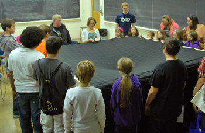
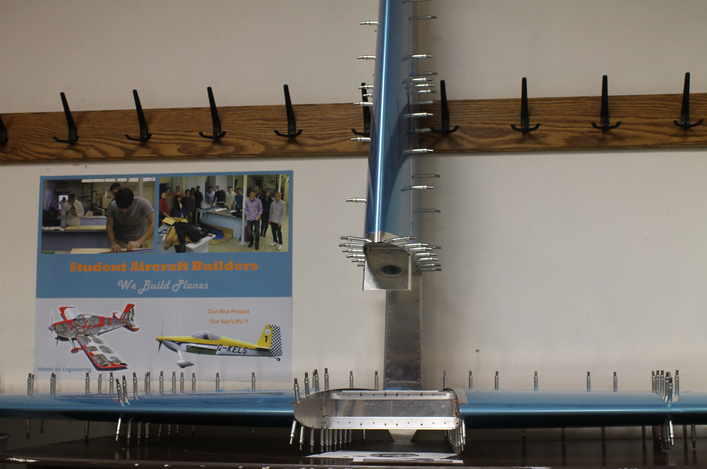
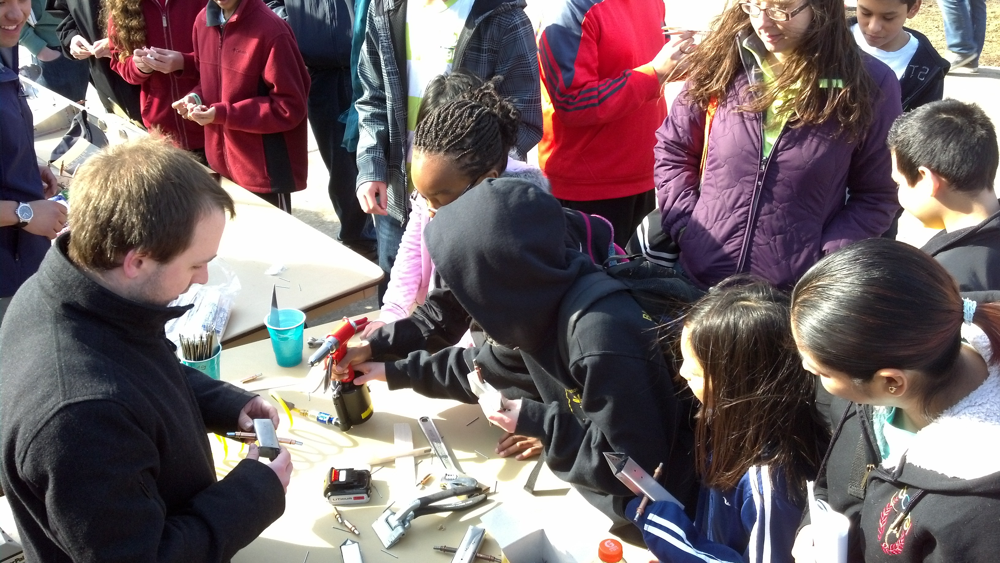
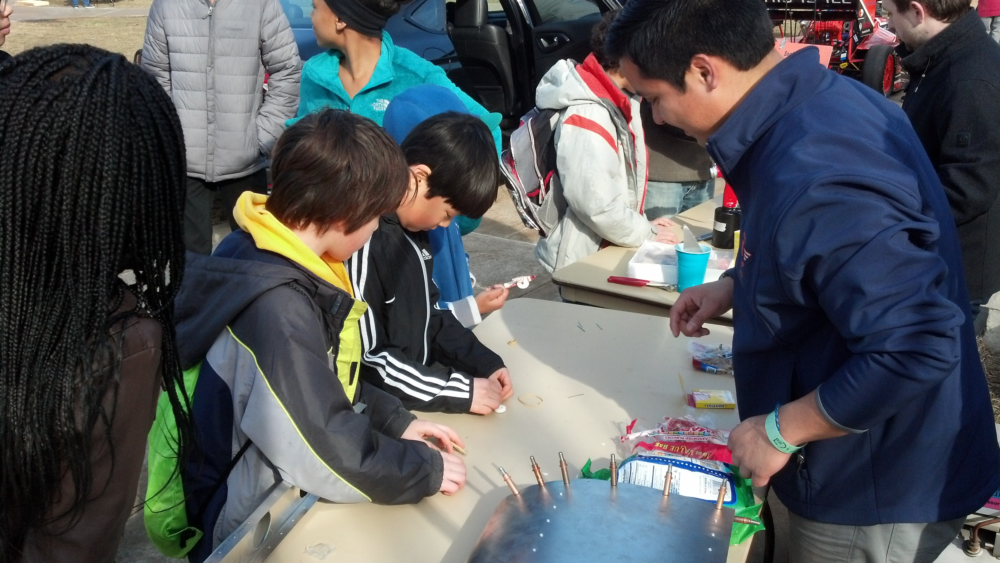

Being an inspiration to students who may lack drive or direction is an opportunity we do not take for granted. As such, educational outreach represents a major focus of SAB. The goal of educational outreach is to inspire students and awe them with science and engineering in a fun and educational way. Our hope is that we can inspire the next generation of great minds in these fields and give them something to strive for as well as to show students that not only are subjects like math and science fun, but important for everyday life. We have the unique ability to get our message across in that we are building an actual aircraft and are comprised of members only a few years older than our audience. As the aircraft takes form, SAB would like to exhibit their progress as well as teach people about what SAB does. The build process will be visually documented so SAB can show interested viewers how the build progress occurs. SAB plans to have other lesson plans to educate children on the basics of flight and aviation in order to spur interests in younger students. Once the aircraft is complete, SAB plans to exhibit the aircraft at various shows around the nation in order to educate people on building and flying kit aircraft.
Our two most successful outreach programs took place this semester in the form of Engineering Open House and Illinois Space Day. At EOH, we were able to present a nearly completed empennage to hundreds of future engineers. We talked to students ranging in age from kindergarten to seniors in high school. For the younger students we helped them put together balsa wood airplanes. We answered questions from the high school students about a possible future in engineering.
Illinois Space Day is an event where elementary and middle school students come to the university to learn about, and be inspired by, space. ISD is sponsored by the Illinois Space Society, but many of the student organizations in the Aerospace Department participate, including SAB. For ISD, we displayed the vertical and horizontal stabilizers, as well as gave a 30 minute video presentation on the future of technology and space exploration. Illinois alumni and four time space shuttle astronaut Scott Altman also gave a presentation about his trips to space and the Hubble telescope, on which all four of his missions were focused.
At EOH, we were able to present a nearly completed empennage to hundreds of future engineers. We talked to students ranging in age from kindergarten to seniors in high school. For the younger students we helped them put together balsa wood airplanes. We answered questions from the high school students about having a future in engineering. We are extremely excited for EOH 2014 as we will have some serious plane to display.
Engineering Open House was a great success. We had our booth on the Bardeen Quad, and it was flooded by over one hundred visitors! SAB showed off their progress on our airplane. There were plenty of hands on activities for visitors to do. Everyone quickly found out that anyone can build a plane with projects like candy airplanes, balsa wood airplanes, and the our build team's sheet metal airplane project (CAD model here) that allowed the visitors to get hands on riveting experience.
Engineering Open House also led to some amazing opportunities for outreach. Three groups came to our booth and asked for information about outreach opportunities. These include the Boy Scouts, Boys and Girls Club, and a local school. SAB looks forward to working with all of them.
SAB Educational Outreach also got to use the Gates Scholar grant that we received. We bought materials for Engineering Open House, RC airplanes, and much more. All of which will be great tools for further education. We are extremely thankful for the grant!